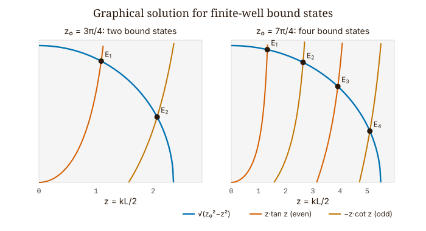
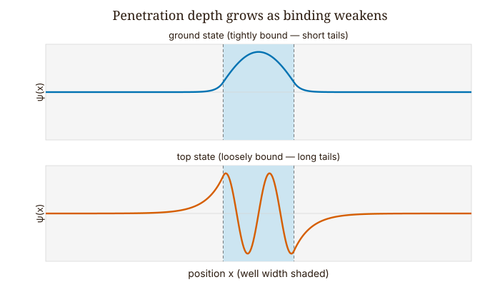
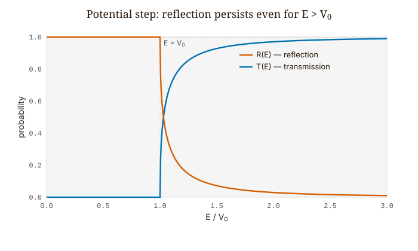
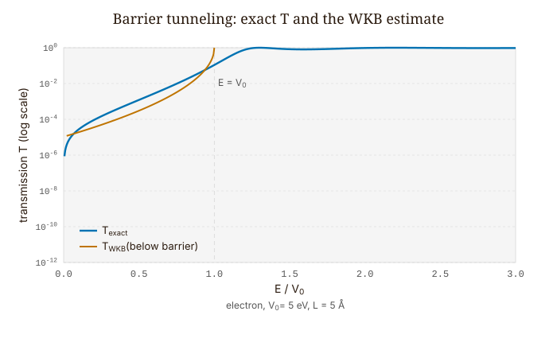
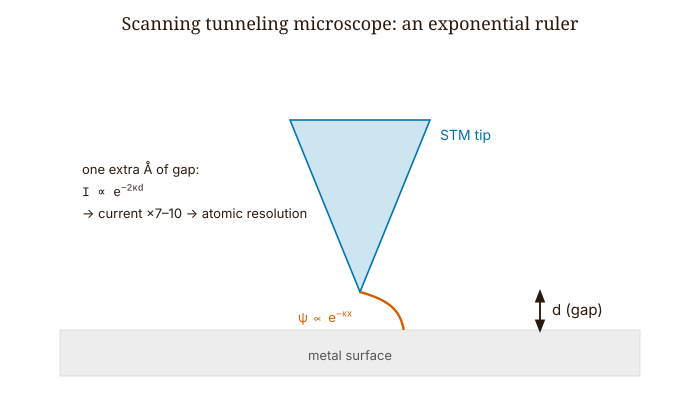
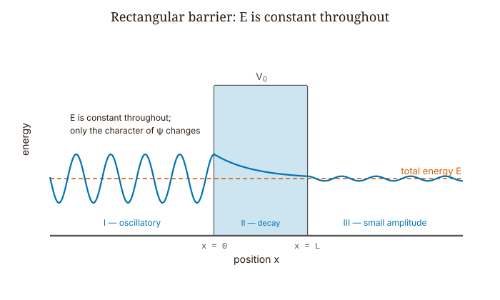

Quantum Mechanics · Volume 1
Chapter 6 — Reflection, Transmission and Tunneling
When we studied the infinite square well in Chapter 5, we assumed perfectly impenetrable walls. That idealization is a useful starting point, but real physical systems have finite barriers. In this chapter we explore what changes when the walls are finite — and we discover that quantum particles can penetrate, and even pass through, regions that are classically forbidden.
The first person to recognize this was Friedrich Hund, who in 1927 was studying the spectra of molecules. Consider ammonia, \(\text{NH}_3\): a nitrogen atom sits above a triangular base of three hydrogens, like the apex of a shallow pyramid. The nitrogen can rest above the plane of hydrogens or below it, and the two arrangements are mirror images of equal energy, separated by an energy barrier — to pass from one to the other, the nitrogen would classically have to force its way through the plane of hydrogens, which costs more energy than the molecule normally has. Hund realized that the wave function does not simply stop at the edge of the classically allowed region. It decays into the forbidden barrier and still has some amplitude on the far side, so the nitrogen can flip from one configuration to the other without ever acquiring the energy to go over the top. The molecule oscillates between its two pyramidal shapes by tunneling straight through the barrier between them — an effect with no classical counterpart, and the first instance of quantum tunneling ever identified. A barrier, in quantum mechanics, does not behave like a solid wall. It suppresses the wave function exponentially, and exponential suppression, no matter how severe, never reaches exactly zero.
The following year, George Gamow applied the same idea to a problem that had frustrated nuclear physicists for a decade. Inside a nucleus, an alpha particle sits behind a Coulomb barrier roughly 30 MeV high, yet the alpha particles that emerge carry only 4–8 MeV of kinetic energy. Classically, such a particle is trapped forever. Quantum mechanically, it leaks through, and the leakage rate is so sensitive to barrier height and particle energy that doubling the energy can change the half-life by twenty-four orders of magnitude. The decay rate of uranium-238 differs from that of polonium-212 by a factor of nearly \(10^{24}\), and the tunneling formula explains the entire span.
The behavior behind both stories is the subject of this chapter: what happens when the walls have a finite height.
6.1 The Finite Square Well
We begin with the infinite square well from Chapter 5 and lower its walls to a finite height. The potential is \(V = -V_0\) for \(|x| < L/2\) and \(V = 0\) outside, with \(V_0 > 0\). Bound states have \(-V_0 < E < 0\) — they sit below the top of the well but above its floor.
Inside the well, the Schrödinger equation describes a particle with kinetic energy \(E + V_0 > 0\), so the solutions are oscillatory:
\[\psi_\text{in}(x) = A\cos(kx) + B\sin(kx), \qquad k = \frac{\sqrt{2m(E+V_0)}}{\hbar}. \tag{6.1}\]
Outside, the kinetic energy is \(E < 0\), so the solutions are exponentials. Normalizable solutions must decay away from the well:
\[\psi_\text{out}(x) = Ce^{-\kappa|x|}, \qquad \kappa = \frac{\sqrt{2m|E|}}{\hbar}. \tag{6.2}\]
We notice right away that \(\psi\) does not vanish at \(x = \pm L/2\). In the infinite well, the infinite walls forced it to zero there, and that condition gave us quantization directly. With finite walls the wave function no longer vanishes there, so we fall back on the general requirement that \(\psi\) and its slope \(\psi'\) be continuous at each wall — a condition the Schrödinger equation enforces wherever the potential is finite. Applied at both walls, those matching conditions determine the allowed energies.
Because the potential is symmetric, the solutions separate cleanly into even-parity states (cosine inside) and odd-parity states (sine inside). For even-parity states, matching at \(x = L/2\) yields:
\[\kappa = k\tan\!\left(\frac{kL}{2}\right). \tag{6.3}\]
For odd-parity states:
\[\kappa = -k\cot\!\left(\frac{kL}{2}\right). \tag{6.4}\]
Neither equation can be solved analytically for \(E\). We can, however, solve them graphically, which is just as informative. Define \(z = kL/2\) and \(z_0 = (L/2\hbar)\sqrt{2mV_0}\), so that \(\kappa L/2 = \sqrt{z_0^2 - z^2}\). The even condition becomes:
\[\sqrt{z_0^2 - z^2} = z\tan z. \tag{6.5}\]
The left side is a quarter-circle of radius \(z_0\). The right side is a series of tangent branches. Each intersection of the circle with a tangent branch is one even-parity bound state. The odd states come from intersections with \(-z\cot z\).

Counting the crossings reveals something the infinite well never showed us: the finite well has a finite number of bound states. That number is roughly \(z_0/(\pi/2)\) rounded up, which in physical units is \(N \approx (L/\pi\hbar)\sqrt{2mV_0}\). As we make the well shallower or narrower, levels disappear from the top, and as we make it deeper or wider, new levels appear. One level always survives, though: no matter how shallow the well, the finite square well always has a ground state. We can see this in the graph, because the quarter-circle always crosses the first tangent branch at least once, however small \(z_0\) becomes.
What about the wave function outside the well? It decays as \(e^{-\kappa|x|}\). The characteristic length \(1/\kappa = \hbar/\sqrt{2m|E|}\) is called the penetration depth. A tightly bound ground state, with large \(|E|\), has a small penetration depth, so its wave function hugs the well. A loosely bound state, with \(E\) near zero, has a large penetration depth, so its wave function leaks far past the classical turning points into a region where a classical particle could never be found.
This is not a defect in the wave function. It is precisely what the Schrödinger equation demands.

As \(V_0 \to \infty\), the penetration depth goes to zero and the energy levels return to the infinite-well values \(n^2\pi^2\hbar^2/(2mL^2)\). In other words, the infinite well is simply the finite well taken to the limit of walls that nothing can penetrate.
6.2 The Potential Step: Reflection and Transmission
We now turn from bound states to scattering. The potential is a step: \(V = 0\) for \(x < 0\), \(V = V_0\) for \(x > 0\). A particle arrives from the left, and we want to know what fraction transmits and what fraction reflects.
Before writing down any wave functions, we set up the right bookkeeping tool. The probability current is:
\[J(x,t) = \frac{\hbar}{m}\,\mathrm{Im}\!\left(\psi^*\frac{\partial\psi}{\partial x}\right). \tag{6.6}\]
For a rightward plane wave \(Ae^{ikx}\), this gives \(J = \hbar k|A|^2/m\) — probability flowing rightward at a rate proportional to speed times density, exactly what we would expect. The transmission coefficient \(T\) is the ratio of transmitted current to incident current, and the reflection coefficient \(R\) is reflected current over incident current. Conservation of probability requires \(R + T = 1\).
When the particle has enough energy (\(E > V_0\)): in region I, \(\psi_I = Ae^{ik_0 x} + Be^{-ik_0 x}\) with \(k_0 = \sqrt{2mE}/\hbar\); in region II, only a rightward wave \(\psi_{II} = Ce^{ik_1 x}\) with \(k_1 = \sqrt{2m(E-V_0)}/\hbar\). Matching \(\psi\) and \(\psi'\) at \(x = 0\):
\[A + B = C, \qquad k_0(A-B) = k_1 C. \tag{6.7}\]
Solving: \(B/A = (k_0 - k_1)/(k_0 + k_1)\) and \(C/A = 2k_0/(k_0 + k_1)\). Now we compute the currents, and a subtlety appears. The transmitted current is \(\hbar k_1|C|^2/m\), not \(\hbar k_0|C|^2/m\), because the particle moves at a different speed on the far side. Using probability current throughout:
\[R = \left(\frac{k_0 - k_1}{k_0 + k_1}\right)^2, \qquad T = \frac{4k_0 k_1}{(k_0 + k_1)^2}. \tag{6.8}\]
Check: \((k_0 - k_1)^2 + 4k_0k_1 = (k_0 + k_1)^2\). \(R + T = 1\). \(\checkmark\)
Here is the genuinely quantum result: \(R \neq 0\) even though the particle has more than enough energy to clear the step. Classically, a particle with \(E > V_0\) always transmits. Quantum mechanically, any abrupt change in \(k\) produces some reflection, in the same way that an impedance mismatch in a transmission line reflects part of a signal. What governs the reflection is not whether the particle can clear the step energetically, but how sharply \(k\) changes at the boundary. Reflection vanishes only when \(k_0 = k_1\), which requires \(V_0 = 0\). Even a step downward, with \(V_0 < 0\), reflects part of the wave.

When the particle does not have enough energy (\(E < V_0\)): now \(k_1 = \sqrt{2m(E-V_0)}/\hbar\) is imaginary. We write \(\kappa = \sqrt{2m(V_0-E)}/\hbar\) (real and positive), so the bounded solution in region II is \(\psi_{II} = Ce^{-\kappa x}\), a decaying exponential. Matching gives \(|B/A|^2 = 1\), so \(R = 1\) and \(T = 0\).
The reflection is total, yet the wave function in region II is not zero. An evanescent tail — a wave function that decays exponentially instead of oscillating — penetrates the forbidden region with characteristic length \(1/\kappa\). Probability density is present there, but no net current flows: the probability sloshes in and out of the step without ever transmitting. This is not tunneling, because the barrier extends forever, so the evanescent tail never reaches a far edge from which it could launch a transmitted wave.
6.3 The Rectangular Barrier: Tunneling
Now we give the barrier a finite width. \(V = V_0\) for \(0 < x < L\) and \(V = 0\) elsewhere. A particle with \(E < V_0\) comes in from the left. The classical prediction is total reflection. The quantum prediction is something quite different.
Three regions:
- Region I (\(x < 0\)): \(\psi_I = Ae^{ikx} + Be^{-ikx}\), \(\hspace{2pt}\) \(k = \sqrt{2mE}/\hbar\).
- Region II (\(0 < x < L\)): \(\psi_{II} = Ce^{\kappa x} + De^{-\kappa x}\), \(\hspace{2pt}\) \(\kappa = \sqrt{2m(V_0-E)}/\hbar\).
- Region III (\(x > L\)): \(\psi_{III} = Fe^{ikx}\) (no reflected wave; nothing to reflect from on the right).
We match \(\psi\) and \(\psi'\) at both interfaces. The algebra is direct — four continuity conditions and four unknowns — and the result is exact:
\[T_\text{exact} = \left[1 + \frac{V_0^2\sinh^2(\kappa L)}{4E(V_0 - E)}\right]^{-1}. \tag{6.9}\]

Everything we want is contained in this single formula. The dependence on barrier height \(V_0\), barrier width \(L\), and particle energy \(E\) is all there, exact and without approximation. Let us read off what it tells us.
For a thick barrier (\(\kappa L \gg 1\)), \(\sinh(\kappa L) \approx e^{\kappa L}/2\), and the denominator is dominated by the exponential:
\[T_\text{exact} \approx \frac{16E(V_0 - E)}{V_0^2}\,e^{-2\kappa L}. \tag{6.10}\]
The WKB approximation — a standard semiclassical estimate that keeps only the exponential decay of the wave across the barrier — gives \(T_\text{WKB} = e^{-2\kappa L}\). The ratio is \(16E(V_0-E)/V_0^2\), a smooth prefactor of order unity when \(E\) lies well below \(V_0\). WKB captures the exponential suppression exactly and misses only the prefactor. For most purposes, the exponential is all that matters.
And that exponential is striking. \(T \propto e^{-2\kappa L}\). Doubling the barrier width squares \(e^{-2\kappa L}\), so the transmission collapses. A scanning tunneling microscope makes direct use of this fact: a single extra ångström of gap between tip and surface changes the tunneling current by a factor of \(e^{2\kappa} \approx 7\) to \(10\), depending on the material. That decade of sensitivity per ångström is what makes atomic-resolution imaging possible. The instrument is a tunneling-current meter, and the current functions as an exponential ruler.

Above the barrier (\(E > V_0\)): now \(\kappa\) becomes imaginary. We let \(k_2 = \sqrt{2m(E-V_0)}/\hbar\), so \(\kappa = ik_2\) and \(\sinh(i\theta) = i\sin\theta\). The formula becomes:
\[T_\text{exact} = \left[1 + \frac{V_0^2\sin^2(k_2 L)}{4E(E - V_0)}\right]^{-1}. \tag{6.11}\]
Now \(T = 1\) whenever \(\sin(k_2 L) = 0\), that is, when \(k_2 L = n\pi\). The barrier becomes perfectly transparent when its width is exactly an integer number of half-wavelengths at the energy inside the barrier. The wave fits the barrier, constructive interference takes over, and the particle passes as though the barrier were not there. These are resonances, and they are the quantum counterpart of anti-reflection coatings in optics or of a Fabry-Pérot cavity tuned to resonance. Between resonances, \(T < 1\) even with \(E > V_0\): the particle has plenty of energy and still reflects in part.
6.4 Worked Example — Electron Tunneling Through a 5 Å Barrier
An electron (\(m_e = 9.109 \times 10^{-31}\) kg) with kinetic energy \(E = 1\) eV hits a rectangular barrier of height \(V_0 = 5\) eV and width \(L = 5\) Å. What is \(T\)?
First, \(\kappa\):
\[\kappa = \frac{\sqrt{2m_e(V_0 - E)}}{\hbar} = \frac{\sqrt{2 \times 9.109\times10^{-31} \times 4 \times 1.602\times10^{-19}}}{1.055\times10^{-34}} \approx 1.025\times10^{10}\ \text{m}^{-1} = 1.025\ \text{Å}^{-1}. \tag{6.12}\]
Then \(\kappa L = 1.025 \times 5 = 5.125\). Since \(\kappa L \gg 1\), the thick-barrier limit applies.
\(\sinh(5.125) = (e^{5.125} - e^{-5.125})/2 \approx (168.2 - 0.006)/2 \approx 84.1.\)
Plugging into the exact formula:
\[T_\text{exact} = \left[1 + \frac{25 \times (84.1)^2}{4 \times 1 \times 4}\right]^{-1} = \left[1 + 11052\right]^{-1} \approx 9.1\times10^{-5}. \tag{6.13}\]
WKB gives \(T_\text{WKB} = e^{-10.25} \approx 3.5\times10^{-5}\).
The ratio: \(T_\text{exact}/T_\text{WKB} \approx 2.56\). The prefactor \(16E(V_0-E)/V_0^2 = 16\times1\times4/25 = 2.56\). Agreement exact, as it must be. \(\checkmark\)
Now consider the physical meaning. The transmission is around \(10^{-4}\) — tiny, but not zero. If the barrier were 10 Å wide instead of 5, \(\kappa L\) would double to 10.25, and \(T_\text{WKB}\) would drop to \(e^{-20.5} \approx 1.25\times10^{-9}\), four more orders of magnitude lower. The exponential gives no quarter. This is why, in tunneling calculations, the barrier width matters more than almost any other quantity.
6.5 Why There Is No Energy Debt
A common pop-science account of tunneling goes like this: “The particle borrows energy from the vacuum — allowed by the time-energy uncertainty principle — crosses the barrier before the debt is called in, and repays it on the other side.” This account is incorrect, and it is worth being clear about exactly why.
The uncertainty relation \(\Delta E\,\Delta t \geq \hbar/2\) does not license borrowing energy for a time \(\Delta t\). That is not what the relation says. Energy is conserved at every instant inside the barrier, and the particle’s total energy stays \(E\) throughout — in region I, inside the barrier, and in region III alike. The wave function inside the barrier, \(Ce^{\kappa x} + De^{-\kappa x}\), is a perfectly valid solution of the time-independent Schrödinger equation for a particle of energy \(E\) in a region where \(V = V_0 > E\). The function is real and decaying rather than oscillatory, but it is the correct solution. There is no negative kinetic energy, no energy overdraft, and no repayment schedule.
What actually happens is both simpler and stranger than the borrowing story. The wave equation requires nonzero amplitude in the classically forbidden region, and when the barrier is finite, that amplitude reaches the far side and launches a transmitted wave. The transmitted amplitude is small because the decaying exponential has reduced it across the width \(L\). That is the whole story. The particle borrows nothing. It passes through because the mathematics of partial differential equations has no concept of “classically forbidden.”

Looking Ahead
The next chapter, Chapter 7 — Operators and Uncertainty, recasts every observable as a Hermitian operator, finds that position and momentum refuse to commute, and derives the uncertainty principle as a theorem about quantum states rather than a statement about clumsy measurement.
Interactive Simulations
These companion simulations run in the browser and accompany this chapter online.
- Tunneling barrier — set E, V0 and width; integrate the exact wave function across the barrier and compare T_exact with the WKB estimate.
- Finite-well bound states — slide the well-depth parameter and watch the graphical-solution crossings and the bound-state count.
- Step reflection — vary E/V0 to see reflection, transmission and the evanescent tail at a potential step.
Exercises
Warm-up
-
[Transcendental matching, graphical counting] A particle of mass \(m\) is in a finite square well of width \(L\) and depth \(V_0\). (a) Show that the even-parity matching condition can be written \(\sqrt{z_0^2 - z^2} = z\tan z\). (b) Sketch both sides for \(z_0 = 3\pi/2\) and count the even-parity bound states. © How many total bound states (even + odd) exist for this \(z_0\)? What this tests: reading bound-state count from the graphical solution without solving transcendental equations numerically.
-
[\(R + T = 1\) from probability current] For the potential step at \(E > V_0\): (a) verify \(R + T = 1\) algebraically; (b) explain in one sentence why \(T \neq |C/A|^2\); © compute \(R\) when \(E = 2V_0\). What this tests: keeping probability current accounting straight, and recognizing that amplitude ratios are not transmission coefficients.
-
[Evanescent penetration depth] A particle with \(E = 2\) eV hits a step with \(V_0 = 5\) eV, \(m = m_e\). (a) Compute \(1/\kappa\) in nm. (b) By what factor does \(|\psi|^2\) drop at \(x = 1/\kappa\)? At \(x = 2/\kappa\)? What this tests: quantifying how rapidly the evanescent tail decays and building intuition for penetration depth as a physical length.
Application
-
[Exact barrier transmission, numerical] An electron with \(E = 3\) eV hits a barrier with \(V_0 = 6\) eV and \(L = 3\) Å. (a) Compute \(\kappa\) in \(\text{Å}^{-1}\). (b) Compute \(T_\text{exact}\) from the exact transmission formula, equation (6.9). © Compute \(T_\text{WKB}\). (d) Find the ratio and compare to \(16E(V_0-E)/V_0^2\). What this tests: numerical fluency with the exact tunneling formula and verifying where WKB is accurate.
-
[Resonance condition above the barrier] For \(V_0 = 2\) eV, \(L = 1\) nm, find the two lowest energies above \(V_0\) at which \(T = 1\). Then find the minimum value of \(T\) between the first and second resonances. What this tests: applying the above-barrier formula and locating resonances as a condition on \(k_2 L\).
-
[STM physics, exponential sensitivity] An STM tip is held 4 Å above platinum (\(\phi \approx 5.7\) eV). (a) Compute \(\kappa\) in \(\text{Å}^{-1}\). (b) Find the ratio of tunneling current at 4 Å vs. 5 Å. © By what factor does current change over a 2 Å surface step? (d) Explain in one sentence why this sensitivity enables atomic-resolution imaging. What this tests: connecting the tunneling formula to a real instrument and appreciating what exponential transduction means in practice.
Synthesis
-
[Finite well applied to nuclear physics] The deuteron can be modeled as a finite square well with \(V_0 \approx 35\) MeV, \(L \approx 2.1\) fm, reduced mass \(\mu \approx m_p/2\). (a) Compute \(z_0\) using \(\hbar c \approx 197\) MeV·fm. (b) How many even-parity bound states does this well support? © The deuteron has only one bound state. Is this consistent? What does it say about deuteron excited states? (A caveat for the curious: the real deuteron is a three-dimensional s-wave problem, which maps onto the odd-parity states of a 1D well; unlike the 1D well, a 3D well must be deeper than a minimum depth to bind at all, and the deuteron is in fact only barely bound.) What this tests: applying the graphical bound-state formalism to a real physical system and cross-checking against experimental fact.
-
[Probability current as physical constraint] Suppose someone proposes \(\psi_{II} = Ce^{\kappa x}\) only (growing exponential) in the barrier region of the step. (a) Compute \(J_{II}\). (b) Is \(R + T = 1\) satisfied? © Why is this solution inadmissible? What this tests: using boundary conditions and current conservation to reject unphysical solutions rather than accepting any function that solves the TISE locally.
Challenge
- [Resonances as anti-reflection coatings] The above-barrier resonance condition \(k_2 L = n\pi\) is structurally identical to the condition for a thin-film anti-reflection coating in optics (\(n_\text{film} t = \lambda/4\) per layer). (a) Identify the optical analogue of each quantum quantity (\(k_2\), \(L\), \(V_0\), \(E\)). (b) In a Fabry-Pérot cavity, resonances occur when the round-trip phase is \(2\pi n\). Show that the quantum resonance condition has the same origin. © Suppose a “double barrier” potential has two rectangular barriers separated by a well. Predict qualitatively where resonances occur and explain the concept of a resonant tunneling diode. What this tests: transferring the resonance concept across physical contexts and beginning to think about devices built on controlled tunneling.
References
Griffiths, D. J., & Schroeter, D. F. (2018). Introduction to Quantum Mechanics (3rd ed.). Cambridge University Press. §2.5–2.6 (finite well), §2.7 (scattering, step, barrier).
Gamow, G. (1928). Zur Quantentheorie des Atomkernes. Zeitschrift für Physik, 51, 204.
Gurney, R. W., & Condon, E. U. (1928). Wave mechanics and radioactive disintegration. Nature, 122, 439; and Physical Review, 33, 127 (1929).
Binnig, G., & Rohrer, H. (1982). Scanning tunneling microscopy. Physical Review Letters, 49, 57.
Eckle, P. et al. (2008). Attosecond ionization and tunneling delay time measurements in helium. Science, 322, 1525.
Sainadh, U. S. et al. (2019). Attosecond angular streaking and tunnelling time in atomic hydrogen. Nature, 568, 75.
PhysicsLibreTexts: “3.4 — Finite Square Well,” UCD Physics 9HE. https://phys.libretexts.org/Courses/University_of_California_Davis/UCD:_Physics_9HE_-_Modern_Physics/03:_One-Dimensional_Potentials/3.4:_Finite_Square_Well